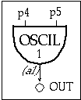

The first instrument was not interesting because it could play only one note at one amplitude level. We can make things more interesting by allowing the pitch and amplitude to be defined by parameters in the score. Each column in the score constitutes a parameter field, numbered from the left. The first three parameter fields of the i statement have a reserved function:
p1 = instrument number
p2 = start time
p3 = duration
All other parameter fields are determined by the way the sound designer defines his instrument. In the instrument below, the oscillator's amplitude argument is replaced by p4 and the frequency argument by p5. Now we can change these values at i-time, i.e. with each note in the score. The orchestra and score files now look like:
f1
0
4096
10
1
; sine wave
; instrument
start
duration
amp(p4)
freq(p5)
i2
0
1
2000
880
i2
1.5
1
4000
440
i2
3
1
8000
220
i2
4.5
1
16000
110
i2
6
1
32000
55
e

Toot 2: oscil with p-fields